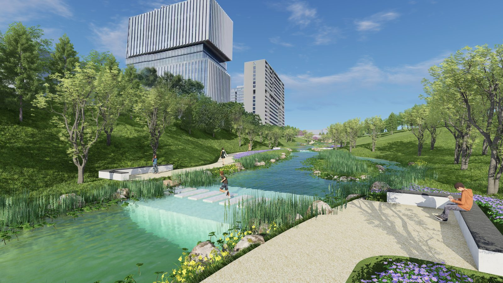
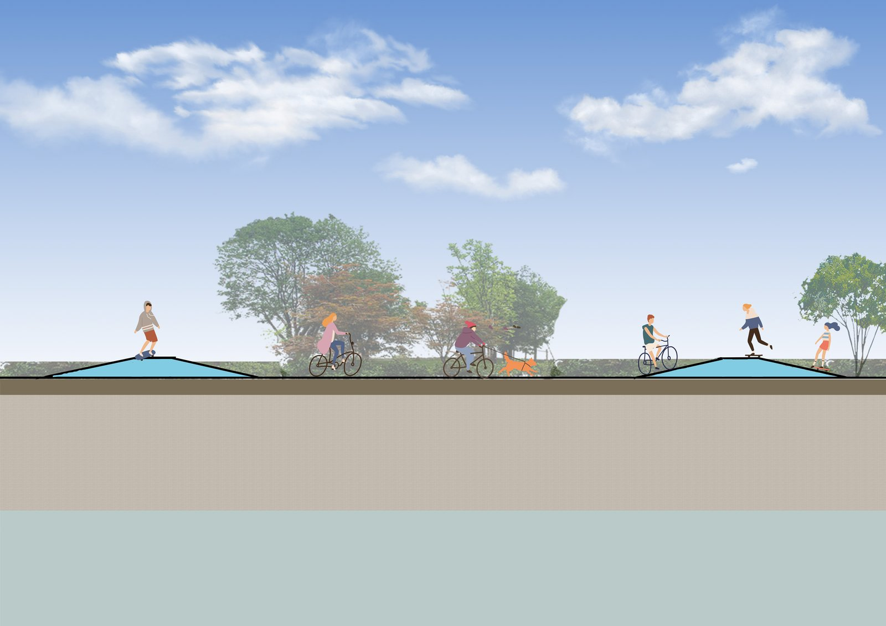
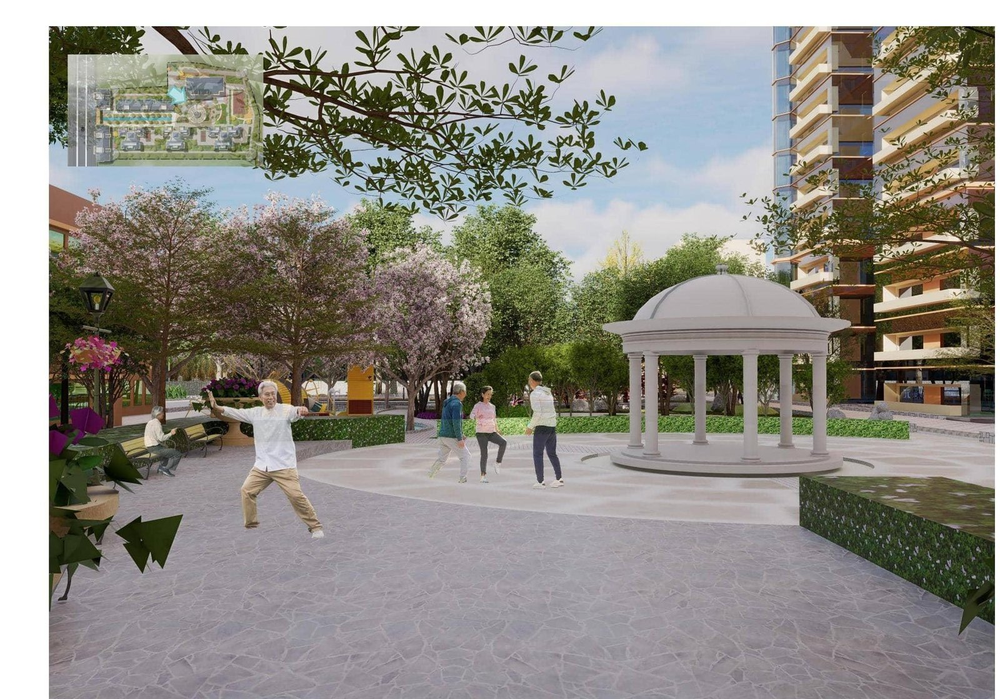
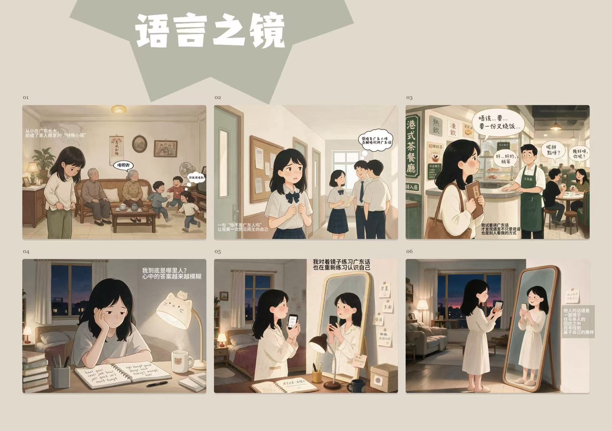
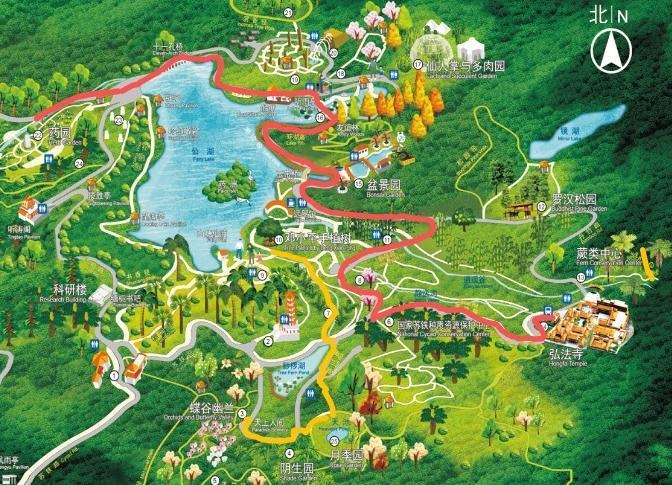

Guangming Science City Waterfront
2.5 km of river drawn end to end: 12 standard cross-sections in CAD, a 35 ha master color plan, and 15 ha modeled in SketchUp with Lumion renders for the client report.
I design content the way I was trained to design places
Landscape-architecture-trained, hardened in foreign trade, now doing an MA in New Media & Social Media at EdUHK. I shoot, edit, draw and publish — and I follow every task through to delivery.
The short version of how a landscape architect ended up falling for content.
I learned design first. Four years of landscape architecture taught me to watch how people actually use a space, then turn that into drawings — CAD sections, SketchUp models, Lumion renders. At the Shenzhen Water Planning & Design Institute I worked on a 2.5 km riverfront in Guangming Science City, and two of my node proposals for the Futian River greenway made it into the next design stage.
Then trade took me somewhere unexpected. It was a B2B car-export business: I sold both new and used cars to car dealers across the Middle East, Africa and South America, handling everything myself: replying to ad-driven inquiries on WhatsApp, shooting walk-around videos so dealers thousands of kilometres away could "inspect" the cars, chasing payments, booking shipments, clearing customs. Five months in, I had 3 loyal dealer clients and about $130,000 in closed GMV.
That job showed me what I actually love: the moment a video, a rendering or a post makes something click for someone far away. So I moved to Hong Kong for an MA in New Media & Social Media at EdUHK — backing up hands-on practice with communication research, algorithms & AI, and multimedia production. Now I'm open to any role where content, coordination and client communication count — anywhere I can keep making things click.
CAD, SketchUp, Lumion, Photoshop, CapCut — from idea to published visual, I can run the whole chain myself.
Facebook publishing, WhatsApp client care, business-email English (IELTS 6.0). I've closed deals with buyers I never met in person.
100+ expense documents a month, zero errors. One 100-person team-building event, 95% satisfaction. Details are where I'm happiest.
Four internships, one sales job, and a few leadership roles on the side.
Baimu Global Trade (Shenzhen) — new & used car export (B2B)
Shenzhen Water Planning & Design Institute
Shenzhen Jujinbao Jewelry
Shenzhen Huize Eco-Environment
Dance team vice captain · Class organizing committee
Selected projects from landscape design, internships and my new media toolkit.

2.5 km of river drawn end to end: 12 standard cross-sections in CAD, a 35 ha master color plan, and 15 ha modeled in SketchUp with Lumion renders for the client report.

Design InstituteWhere the greenway passed through a box-culvert section, space was tight. I compared 2 node designs and drew an 800 m demonstration-section profile — both proposals were adopted into the next stage.

A ~30,000 m² site for all ages. Resident interviews showed elderly users relied on public space while kids had too little of it — so I split the site into 8 zones and delivered the full package: plans, analysis maps, planting design, model, renders and 5 node sections for the final defense.
Collected public YouTube video data with Python, then cleaned, organized and visualized it — my first bridge from content creation to content strategy.
View full analysis report →During trade work I shot product walk-around videos, edited them with subtitles in CapCut and published to Facebook — the pipeline that got me hooked on social media. Two real samples here; more available on request.

Two independent pieces made by me with AI — a six-panel illustrated story titled "Mirror of Language", and a separate animated comic drama. I wrote, generated and edited both on my own; more available on request.

Event PlanningPlanned a 100-person company hike at Xianhu Botanical Garden end-to-end: theme "Unwind, back to nature", venue shortlisting and vendor price talks, two route options (full-day & half-day), timetable, lunch booking, QR-code sign-up, safety briefing and on-site execution — the route map was hand-annotated by me. 95% satisfaction in the post-event survey.
Every figure here comes straight from my CV — happy to walk through any project in an interview.
Whether it's a role, a project or a quick question — my inbox is open and I reply fast.
This opens your email client with everything pre-filled.